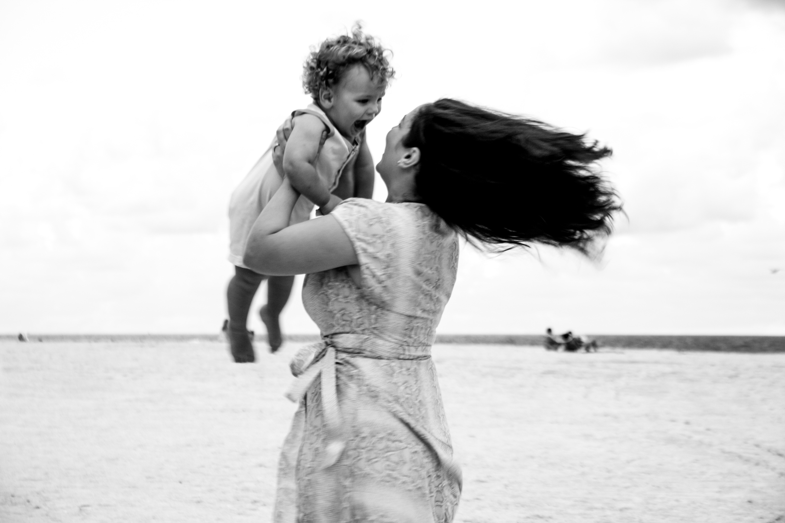
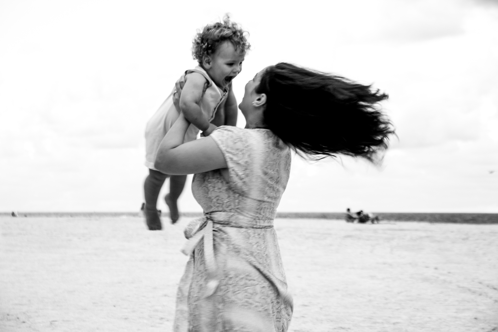

PHOTOGRAPHS OF PEOPLE


HI,
I'M YULIA
I love to capture all the in-between moments. The genuine affection, genuine feelings thing. I have worked behind the scenes for many years, enhancing people's beauty for the most special occasions in their lives, such as weddings, anniversaries, and bachelorette parties, and worked for magazines where I did makeup and hair. I continue to love and create, but recently I have begun using photography to tell stories. My family, especially my tiny precious boy, who shows me a lot of love, care, and support, is what makes me feel the most alive. Therefore, I wish to use photography to spread my enthusiasm and love to people all around the world. All of these stories will be kept for a very long time.


 
